About Me
Currently, I am a Postdoctoral Researcher at Multimedia Laboratory (MMLab), The Chinese University of Hong Kong (CUHK), advised by Prof. Tianfan Xue, Prof. Jinwei Gu and Prof. Hongsheng Li. Before that, I obtained my Ph.D. degree from University of Science and Technology of China (USTC) in 2023, advised by Prof. Zhiwei Xiong. I obtained my B. Eng. degree in the Department of Automation (Lang Shijun Honors Class) from Northeastern University, China, in 2018.
My research interests broadly lie in the areas of Agentic AI, deep generative models, computational photography, and general fields of computer vision and machine learning.
My research interests broadly lie in the areas of Agentic AI, deep generative models, computational photography, and general fields of computer vision and machine learning.
I am always open to collaborations and discussions! If you are interested in my research or have any ideas to share, feel free to reach out.
Updates
- New 03/2026: Two papers are accepted to CVPR 2026.
- New 01/2026: Two papers are accepted to ICLR 2026.
- 09/2025: One paper is accepted to NeurIPS 2025.
- 08/2025: One paper is accepted by T-IP.
- 06/2025: One paper is accepted to ICCV 2025.
- 03/2025: One paper is accepted by Information Fusion.
- 03/2025: One paper for Polarization-based Reflection-Free Imaging is accepted to CVPR 2025 .
Selected Publications [ Full List ]
Agentic & Generative AI
PhotoAgent: Agentic Photo Editing with Exploratory Visual Aesthetic Planning
Mingde Yao, Zhiyuan You, King-Man Tam, Menglu Wang, and Tianfan Xue.
arXiv Preprint, 2026
An autonomous photo editing agent that performs multi-step aesthetic planning and refinement to transform images with minimal user input.
[ PDF ] [ Project page ] [ Code ]
Mingde Yao, Zhiyuan You, King-Man Tam, Menglu Wang, and Tianfan Xue.
arXiv Preprint, 2026
An autonomous photo editing agent that performs multi-step aesthetic planning and refinement to transform images with minimal user input.
[ PDF ] [ Project page ] [ Code ]
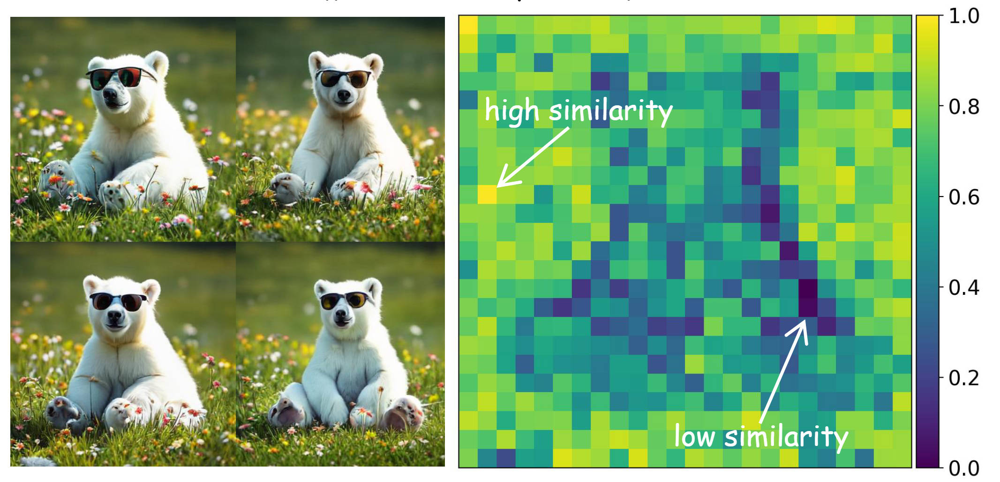
Group Critical-token Policy Optimization for Autoregressive Image Generation
Guohui Zhang, Hu Yu, Xiaoxiao Ma, Jinghao Zhang, Yaning Pan, Mingde Yao, Jie Xiao, Linjiang Huang, and Feng Zhao.
International Conference on Learning Representations (ICLR), 2026
A token-critical RLVR method for autoregressive image generation that selects key tokens (30%) for optimization, outperforming full-token baselines.
[ arXiv ]
Guohui Zhang, Hu Yu, Xiaoxiao Ma, Jinghao Zhang, Yaning Pan, Mingde Yao, Jie Xiao, Linjiang Huang, and Feng Zhao.
International Conference on Learning Representations (ICLR), 2026
A token-critical RLVR method for autoregressive image generation that selects key tokens (30%) for optimization, outperforming full-token baselines.
[ arXiv ]
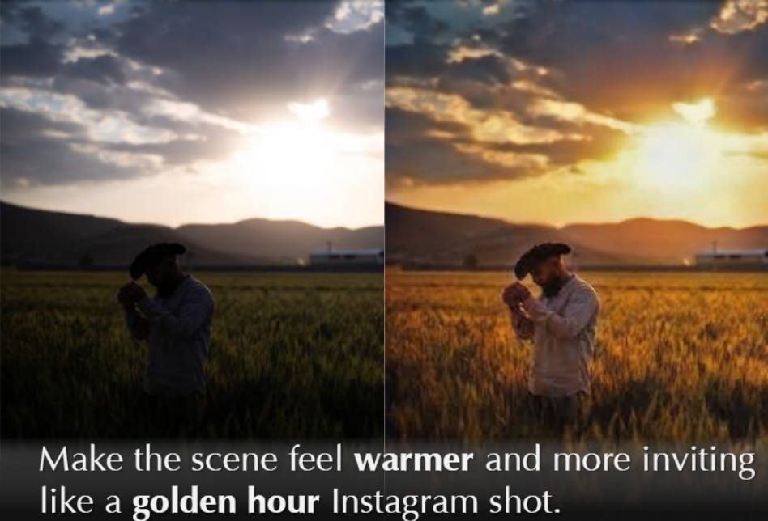
InstantRetouch: Efficient and High-Fidelity Instruction-Guided Image Retouching with Bilateral Space
Jiarui Wu, Yujin Wang, Ruikang Li, Fan Zhang, Mingde Yao, and Tianfan Xue.
IEEE/CVF Conference on Computer Vision and Pattern Recognition (CVPR), 2026
A one-step bilateral grid retouching model delivering 70–900× speedup, eliminating content drift, and preserving high-fidelity edits.
[ PDF ]
Jiarui Wu, Yujin Wang, Ruikang Li, Fan Zhang, Mingde Yao, and Tianfan Xue.
IEEE/CVF Conference on Computer Vision and Pattern Recognition (CVPR), 2026
A one-step bilateral grid retouching model delivering 70–900× speedup, eliminating content drift, and preserving high-fidelity edits.
[ PDF ]
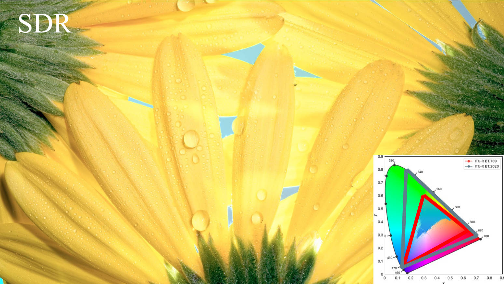
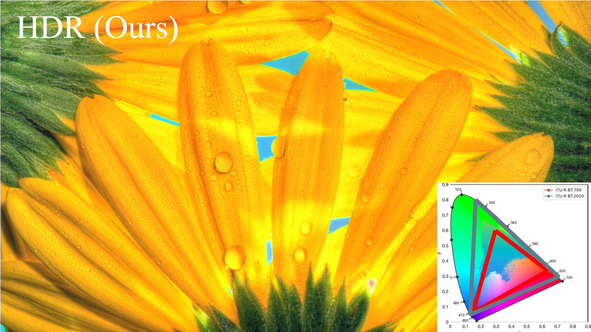
HDR Image Generation via Gain Map Decomposed Diffusion
Yuanshen Guan, Ruikang Xu, Yinuo Liao, Mingde Yao, Lizhi Wang, and Zhiwei Xiong.
IEEE/CVF International Conference on Computer Vision (ICCV), 2025
Breaks HDR generation into SDR + gain map, unlocking high-quality HDR synthesis without any HDR data or encoders.
[ PDF ] [ Code ]
Yuanshen Guan, Ruikang Xu, Yinuo Liao, Mingde Yao, Lizhi Wang, and Zhiwei Xiong.
IEEE/CVF International Conference on Computer Vision (ICCV), 2025
Breaks HDR generation into SDR + gain map, unlocking high-quality HDR synthesis without any HDR data or encoders.
[ PDF ] [ Code ]
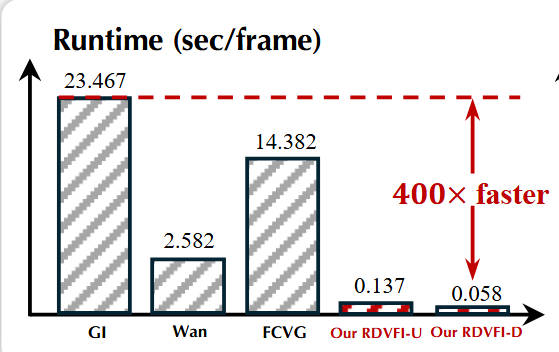
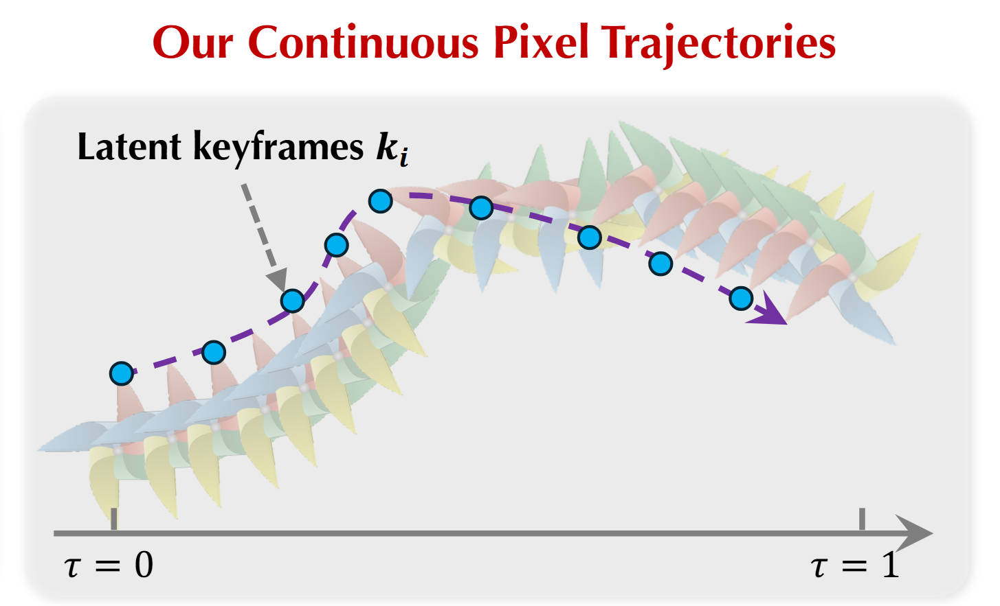
Realtime Video Frame Interpolation using One-Step Diffusion Sampling
Yongrui Ma, Shijie Zhao, Mingde Yao, Junlin Li, Li Zhang, Xiaohong Liu, Qi Dou, Jinwei Gu, and Tianfan Xue.
International Conference on Learning Representations (ICLR), 2026
Realtime video frame interpolation using one-step diffusion sampling — achieves real-time 17 FPS at 1024×576 with up to 44× acceleration over Wan by modeling motion with one-step diffusion.
Yongrui Ma, Shijie Zhao, Mingde Yao, Junlin Li, Li Zhang, Xiaohong Liu, Qi Dou, Jinwei Gu, and Tianfan Xue.
International Conference on Learning Representations (ICLR), 2026
Realtime video frame interpolation using one-step diffusion sampling — achieves real-time 17 FPS at 1024×576 with up to 44× acceleration over Wan by modeling motion with one-step diffusion.
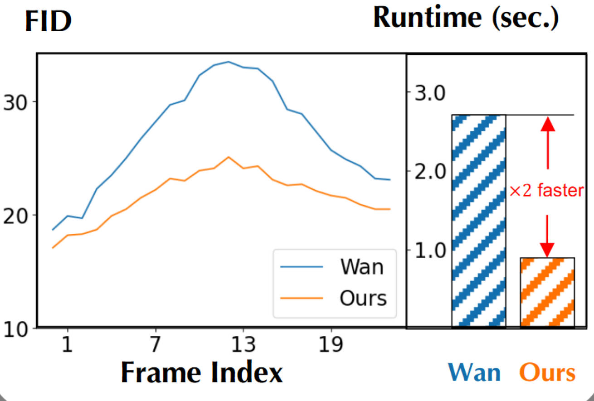
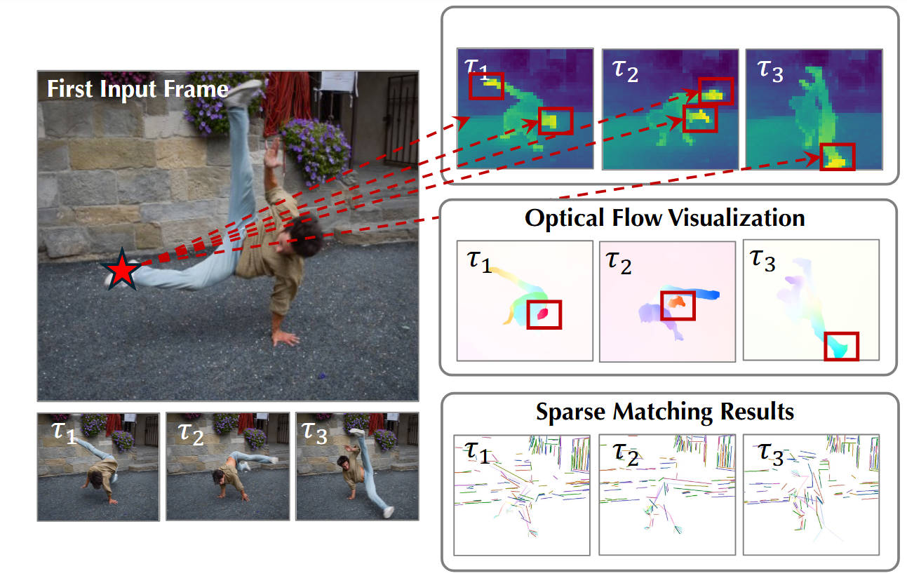
Bi-directional Autoregressive Diffusion for Large Complex Motion Interpolation
Yongrui Ma, Shijie Zhao, Mingde Yao, Junlin Li, Li Zhang, Xiaohong Liu, Qi Dou, Jinwei Gu, and Tianfan Xue.
IEEE/CVF Conference on Computer Vision and Pattern Recognition (CVPR), 2026
First autoregressive diffusion for VFI — 3× faster than Wan, with better motion quality.
Yongrui Ma, Shijie Zhao, Mingde Yao, Junlin Li, Li Zhang, Xiaohong Liu, Qi Dou, Jinwei Gu, and Tianfan Xue.
IEEE/CVF Conference on Computer Vision and Pattern Recognition (CVPR), 2026
First autoregressive diffusion for VFI — 3× faster than Wan, with better motion quality.
Computational Photography & Restoration
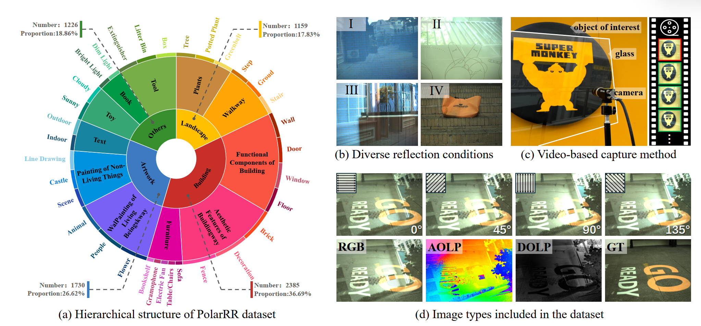
PolarFree: Polarization-based Reflection-Free Imaging
Mingde Yao, Menglu Wang, King-Man Tam, Lingen Li, Tianfan Xue, and Jinwei Gu.
IEEE Conference on Computer Vision and Pattern Recognition (CVPR), 2025
First polarization+RGB reflection removal framework, built on a 6.5K dataset (8× larger), delivering markedly cleaner, sharper images beyond prior methods.
[ PDF ] [ Project page ] [ Code ] [ Dataset ]
Mingde Yao, Menglu Wang, King-Man Tam, Lingen Li, Tianfan Xue, and Jinwei Gu.
IEEE Conference on Computer Vision and Pattern Recognition (CVPR), 2025
First polarization+RGB reflection removal framework, built on a 6.5K dataset (8× larger), delivering markedly cleaner, sharper images beyond prior methods.
[ PDF ] [ Project page ] [ Code ] [ Dataset ]
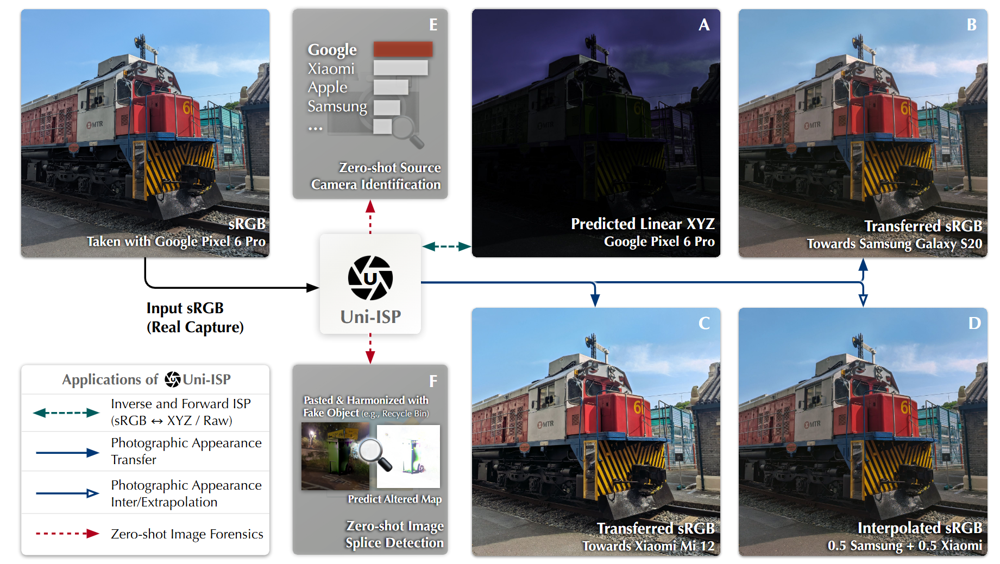
Uni-ISP: Unifying the Learning of ISPs from Multiple Cameras
Lingen Li, Mingde Yao, Xingyu Meng, Muquan Yu, Tianfan Xue, and Jinwei Gu.
Transactions on Image Processing (T-IP), 2025
A unified, device-aware neural ISP that learns forward and inverse pipelines across cameras, achieving +2.4 dB / +1.5 dB PSNR gains while enabling cross-camera generalization and new applications.
[ Project page ] [ PDF ] [ Video ] [ Code ] [ FiveCam Dataset ]
Lingen Li, Mingde Yao, Xingyu Meng, Muquan Yu, Tianfan Xue, and Jinwei Gu.
Transactions on Image Processing (T-IP), 2025
A unified, device-aware neural ISP that learns forward and inverse pipelines across cameras, achieving +2.4 dB / +1.5 dB PSNR gains while enabling cross-camera generalization and new applications.
[ Project page ] [ PDF ] [ Video ] [ Code ] [ FiveCam Dataset ]
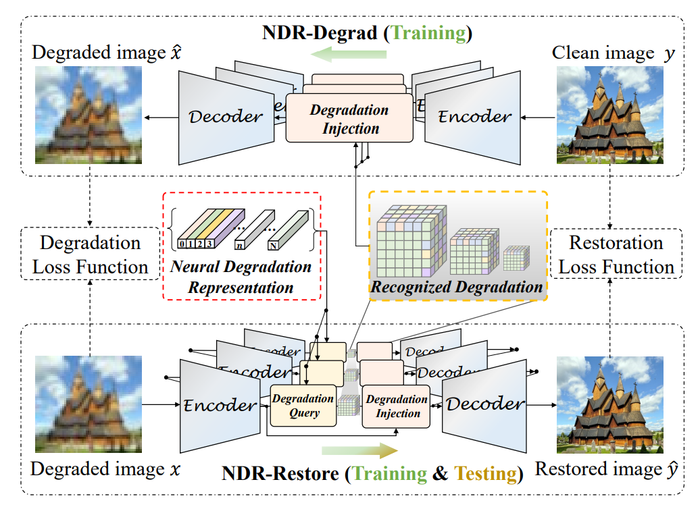
Neural Degradation Representation Learning for All-In-One Image Restoration
Mingde Yao, Ruikang Xu, Yuanshen Guan, Jie Huang, and Zhiwei Xiong.
Transactions on Image Processing (T-IP), 2024
[ PDF ] [ Code ]
Mingde Yao, Ruikang Xu, Yuanshen Guan, Jie Huang, and Zhiwei Xiong.
Transactions on Image Processing (T-IP), 2024
[ PDF ] [ Code ]
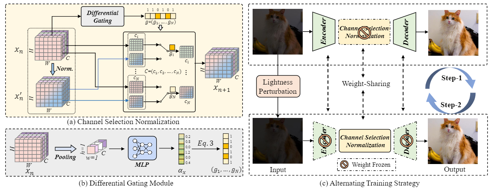
Generalized Lightness Adaptation with Channel Selective Normalization
Mingde Yao*, Jie Huang*, Xin Jin, Ruikang Xu, Shenglong Zhou, Man Zhou, and Zhiwei Xiong.
IEEE International Conference on Computer Vision (ICCV), 2023
[ PDF ] [ Code ]
Mingde Yao*, Jie Huang*, Xin Jin, Ruikang Xu, Shenglong Zhou, Man Zhou, and Zhiwei Xiong.
IEEE International Conference on Computer Vision (ICCV), 2023
[ PDF ] [ Code ]

Bidirectional Translation between HD-SDR and UHD-HDR Videos
Mingde Yao, Dongliang He, Xin Li, Zhihong Pan, and Zhiwei Xiong.
Transactions on Multimedia (T-MM) , 2023
[ PDF ] [ Code ]
Mingde Yao, Dongliang He, Xin Li, Zhihong Pan, and Zhiwei Xiong.
Transactions on Multimedia (T-MM) , 2023
[ PDF ] [ Code ]
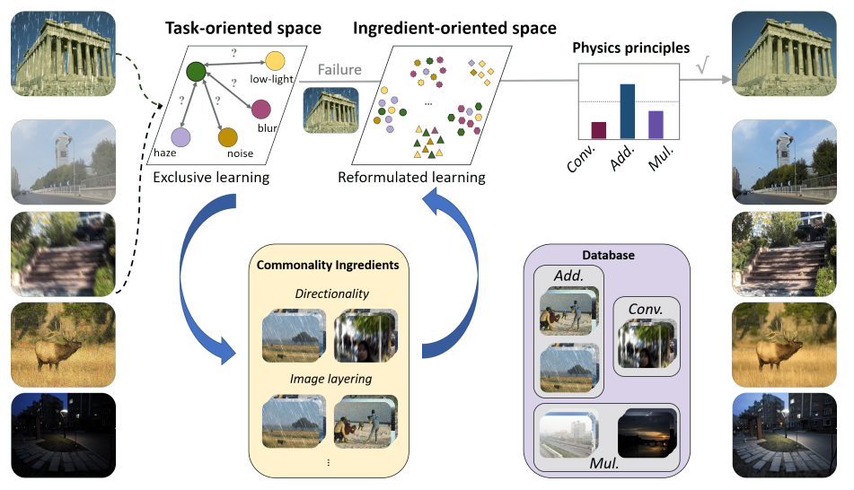
Ingredient-oriented Multi-Degradation Learning for Image Restoration
Jinghao Zhang, Jie Huang, Mingde Yao, Zizheng Yang, Hu Yu, Man Zhou, and Feng Zhao.
IEEE Conference on Computer Vision and Pattern Recognition (CVPR) , 2023
[ PDF ] [ Bibtex ]
Jinghao Zhang, Jie Huang, Mingde Yao, Zizheng Yang, Hu Yu, Man Zhou, and Feng Zhao.
IEEE Conference on Computer Vision and Pattern Recognition (CVPR) , 2023
[ PDF ] [ Bibtex ]
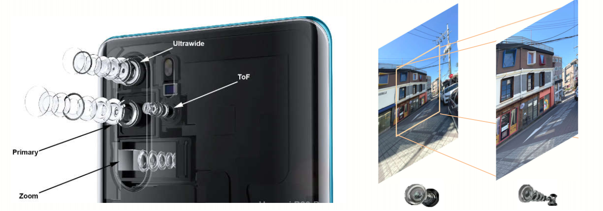
Zero-Shot Dual-Lens Super-Resolution
Ruikang Xu*, Mingde Yao*, and Zhiwei Xiong.
IEEE Conference on Computer Vision and Pattern Recognition (CVPR) , 2023
[ PDF ] [ Code ] [ Slide ] [ Video ]
Ruikang Xu*, Mingde Yao*, and Zhiwei Xiong.
IEEE Conference on Computer Vision and Pattern Recognition (CVPR) , 2023
[ PDF ] [ Code ] [ Slide ] [ Video ]
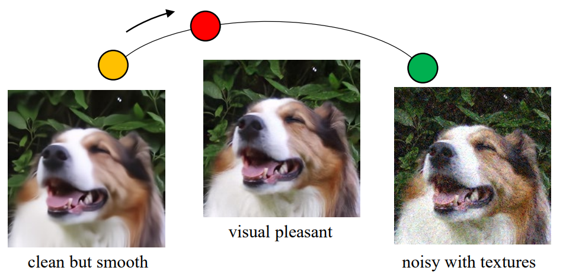
Towards Interactive Self-Supervised Denoising
Mingde Yao, Dongliang He, Xin Li, Fu Li, and Zhiwei Xiong.
IEEE Transactions on Circuits and Systems for Video Technology (T-CSVT) , 2023
[ PDF ] [ Code ] [ Bibtex ]
Mingde Yao, Dongliang He, Xin Li, Fu Li, and Zhiwei Xiong.
IEEE Transactions on Circuits and Systems for Video Technology (T-CSVT) , 2023
[ PDF ] [ Code ] [ Bibtex ]
3D & Spectral Imaging
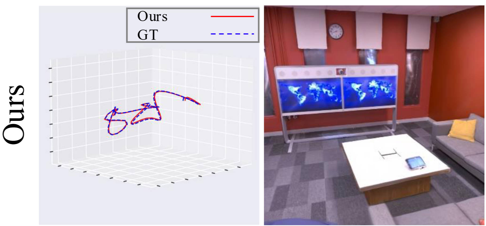
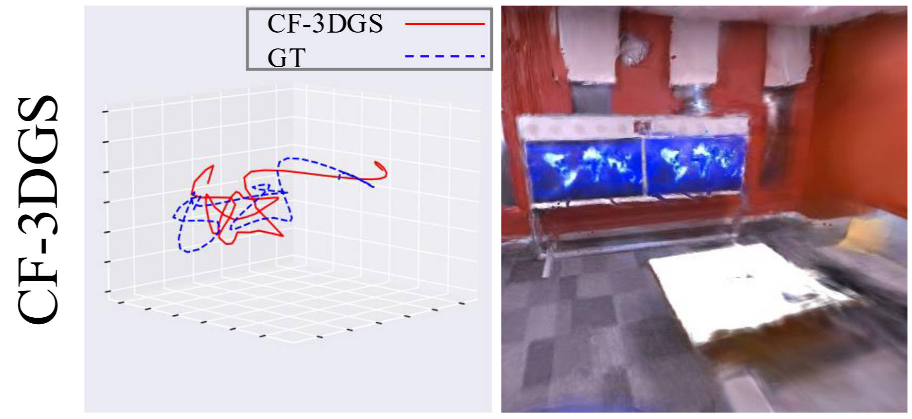
NopeRoomGS: Indoor 3D Gaussian Splatting Optimization without Camera Pose Input
Wenbo Li*, Yan Xu*, Mingde Yao, Fengjie Liang, Jiankai Sun, Menglu Wang, Guofeng Zhang, Linjiang Huang, and Hongsheng Li.
Advances in Neural Information Processing Systems (NeurIPS), 2025
A pose-free 3DGS framework that eliminates SfM, delivering robust pose estimation and photorealistic view synthesis even in textureless scenes and under abrupt camera motion.
Wenbo Li*, Yan Xu*, Mingde Yao, Fengjie Liang, Jiankai Sun, Menglu Wang, Guofeng Zhang, Linjiang Huang, and Hongsheng Li.
Advances in Neural Information Processing Systems (NeurIPS), 2025
A pose-free 3DGS framework that eliminates SfM, delivering robust pose estimation and photorealistic view synthesis even in textureless scenes and under abrupt camera motion.
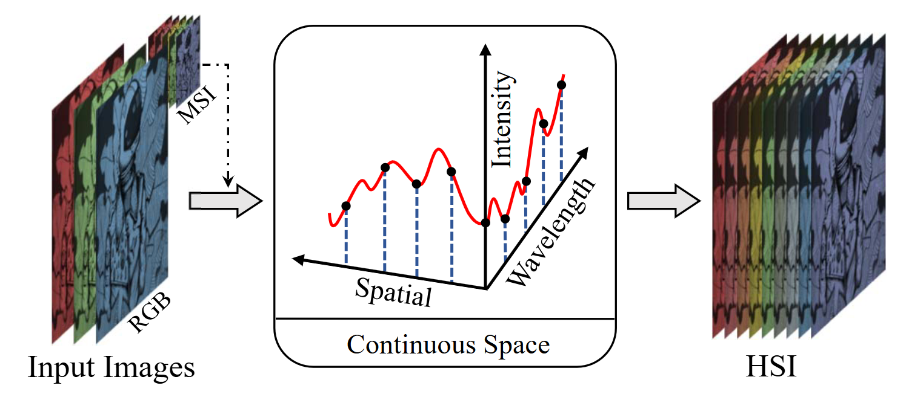
Continuous Spatial-Spectral Reconstruction via Implicit Neural Representation
Ruikang Xu, Mingde Yao,Chang Chen, Lizhi Wang, and Zhiwei Xiong.
International Journal of Computer Vision (IJCV), 2024
ECCV Mobile Intelligent Photography & Imaging Workshop (ECCVW) , 2022
[Best Paper Honorable Mention]
[ PDF (Conference Version) ] [ PDF (Journal Version) ] [ Code ]
Ruikang Xu, Mingde Yao,Chang Chen, Lizhi Wang, and Zhiwei Xiong.
International Journal of Computer Vision (IJCV), 2024
ECCV Mobile Intelligent Photography & Imaging Workshop (ECCVW) , 2022
[Best Paper Honorable Mention]
[ PDF (Conference Version) ] [ PDF (Journal Version) ] [ Code ]
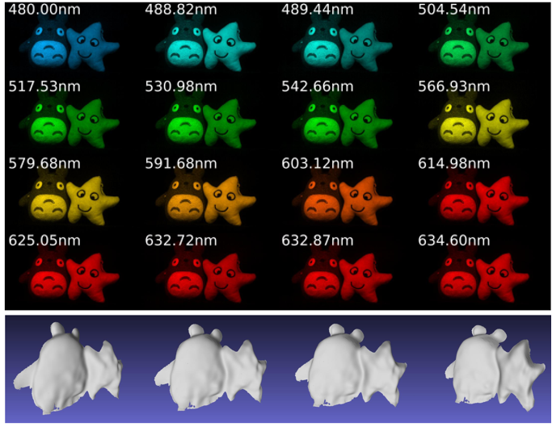
Spectral-depth imaging with deep learning based reconstruction
Mingde Yao, Zhiwei Xiong, Lizhi Wang, Dong Liu, and Xuejin Chen.
Optics Express (OE) , 2019
[ PDF ]
Mingde Yao, Zhiwei Xiong, Lizhi Wang, Dong Liu, and Xuejin Chen.
Optics Express (OE) , 2019
[ PDF ]
Awards
- Winner of Bokeh Effect Synthesis in ICCV AIM Challenge, 2019
- Runner-Up of Burst Super-Resolution in CVPR NTIRE Challenge, 2022
- Second runner-up of Atmospheric Turbulence Mitigation in CVPR UG+ Challenge, 2022